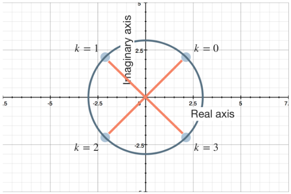
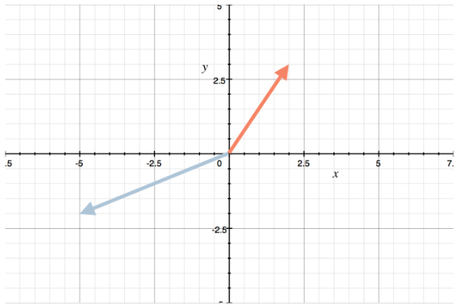

Pre-Calculus
Complex Numbers
Imaginary Numbers
The complex number system is based on the imaginary unit $i$. The imaginary number is defined as $i^2 = -1$ or $i = \sqrt{-1}$.
Without imaginary numbers, we have no way to find the value of $x$ in an equation like $x^2 = -16$, as the square root of a negative number isn't defined in the real number system.
Simplifying Powers of Imaginary Numbers
A natural extension of the definition of the imaginary number $i$ is that the powers of $i$ follow a cyclical pattern.
$i^0 = 1$
$i^1 = \sqrt{-1}$
$i^2 = -1$
$i^3 = -i$
$i^4 = 1$
$i^5 = \sqrt{-1}$
$i^6 = -1$
$i^7 = -i$
This pattern extends to the negative powers as well. Because the pattern is predictable, we can simplify any power of $i$ just by pulling out the largest power that is divisible by $4$. For instance:
$i^{202}$
$= i^{200} \cdot i^2$
$= (i^{4})^{50} \cdot i^2$
$= (1)^{50} \cdot i^2$
$= 1 \cdot i^2$
$= i^2$
$= -1$
Operations on Complex Numbers
Complex numbers include all of the real numbers, and all of the imaginary numbers. The standard form of a complex number is $z = a + bi$. The real part of the complex number, $a$, can also be described as $Re(z)$. The imaginary part, $b$, can be described as $Im(z)$. A pure imaginary number is one where $a$ or $Re(z)$ is equal to zero.
To add or subtract two complex numbers, we deal with the real parts and imaginary parts separately. For example, the sum $(-2 + 17i) + (6 - 8i) = 4 + 9i$.
Multiplication:
Complex numbers are binomials by definition, so we use the FOIL method (first, outer, inner, last) to multiply their terms.
Example:
Find the product of $-6 + 2i$ and $4 - 5i$.
$(6 + 2i)(4 - 5i)$
$= (-6)(4) + (-6)(-5i) + (2i)(4) + (2i)(-5i)$
$= -24 + 38i + 10i^2$
Because $i^2 = -1$, we get:
$= -24 + 38i - 10(-1)$
$= 24 + 38i + 10$
Multiplying a real number by a complex number looks like $3 \times 4i = 12i$. Multiplying two imaginary produces an $i^2$ term, and therefore results in a real number. For example:
$3i \times 4i = 12i^2 = 12(-1) = -12$
The product of $i$ and $-i$ is:
$i(-i)$
$= -(i^2)$
$= -(-1)$
$= 1$
Just like with real numbers, multiplying a complex number by zero produces a zero.
Division:
When we divide a complex number by a real number, we get:
$\frac{a + bi}{c} \to \frac{a}{c} + \frac{bi}{c} \to \frac{a}{c} + \frac{b}{c} i$
$\frac{a}{c}$ is now the real part of the complex number, $\frac{b}{c}$ is the imaginary part
When we divide a complex number by a pure imaginary number, it looks like this:
$\frac{a + bi}{ci} \to \frac{a}{ci} + \frac{bi}{ci} \to \frac{a}{c}i^{-1} + \frac{b}{c}$
$\to \frac{a}{c}(-i) + \frac{b}{c} \to - \frac{a}{c}i + \frac{b}{c} \to \frac{b}{c} - \frac{a}{c}i$
After the division, $\frac{b}{c}$ is now the real part of the complex number, and $\frac{a}{c}$ the imaginary part.
The Complex Conjugate
What about when we divide the full complex binomial $z = a + bi$ by another complex binomial $z = c + di$?
$\frac{a + bi}{c + di}$
The conjugate of a binomial is the same two terms of the binomial, but with the opposite sign between them. The complex conjugate is the same concept, but with complex binomials. The complex conjugate of $3 + 4i$ is $3 - 4i$, or more generally, the complex conjugate of $a + bi$ is $a - bi$.
To simplify the quotient of two complex numbers, we need to multiply both the numerator and denominator of the fraction by the complex conjugate of the denominator.
$\frac{a + bi}{c + di} \left( \frac{c - di}{c - di} \right)$
$= \frac{ (a + bi) (c - di) }{ (c + di) (c - di) }$
Then we separately FOIL the numerator and denominator:
$= \frac{ ac - adi + bci - bdi^2 }{ c^2 - cdi + cdi - d^2 i^2 }$
When we multiply by the complex conjugate like this, the two terms in the middle of the denominator cancel each other out.
$= \frac{ ac - adi + bci - bdi^2 }{ c^2 - d^2 i^2 }$
$= \frac{ ac - adi + bci - bd (-1) }{ c^2 + d^2 (-1) }$
$= \frac{ ac - adi + bci + bd }{ c^2 + d^2 }$
$= \frac{ac + bd}{c^2 + d^2} + \frac{bc - ad}{c^2 + d^2} i$
The first fraction is the real number part, and the second is the imaginary part. When we divide two complex number binomials, the result will be a complex number binomial.
Roots of Complex Numbers
To find the roots of a complex number, we start with a complex number in polar form, $z = r(cos \theta + i ~sin ~\theta)$. Once in polar form, its $n^{th}$ roots are given in radians by:
$\sqrt[n]{2} = \sqrt[n]{r} \left[ cos \left( \frac{\theta + 2 \pi k}{n} \right) + i ~sin \left( \frac{\theta + 2 \pi k}{n} \right) \right]$
or in degrees by:
$\sqrt[n]{2} = \sqrt[n]{r} \left[ cos \left( \frac{\theta + 360^{\circ}}{n} \right) + i ~sin \left( \frac{\theta + 360^{\circ}}{n} \right) \right]$
What does it mean to find the $n^{th}$ roots? If finding the $5^{th}$ roots of a complex number, it means finding the set of values that, when raised to the $5^{th}$ power, are equal to the complex number. There are always $n$ of the $n^{th}$ roots - e.g., $3$ if looking for the $3^{rd}$ roots, $5$ if looking for the $5^{th}$ roots, etc.
Example:
Find the $4^{th}$ roots of the following complex number:
$z = 81(cos ~180^{\circ} + i ~sin ~180^{\circ})$
Because we're looking for 4th roots, we know there will be $4$ of them given by $k = 0, 1, 2, 3$.
$\sqrt[n]{z} = \sqrt[n]{r} \left[ cos \left( \frac{\theta + 360^{\circ} k}{n} \right) + i ~sin \left( \frac{\theta + 360^{\circ} k}{n} \right) \right]$
$\sqrt[4]{z} = \sqrt[4]{r} \left[ cos \left( \frac{\theta + 360^{\circ} k}{4} \right) + i ~sin \left( \frac{\theta + 360^{\circ} k}{4} \right) \right]$
For the given complex number, $r = 81$ and $\theta = 180^{\circ}$.
$\sqrt[4]{z} = \sqrt[4]{81} \left[ cos \left( \frac{180^{\circ} + 360^{\circ} k}{4} \right) + i ~sin \left( \frac{180^{\circ} + 360^{\circ} k}{4} \right) \right]$
Next, we'll find values for $k = 0, 1, 2, 3$.
| k | Formula | Result |
|---|---|---|
| $k = 0$ | $\sqrt[4]{2}_{k=0}$ | $\frac{ 3 \sqrt{2} }{ 2 } + \frac{ 3 \sqrt{2} }{ 2 } i$ |
| $k = 1$ | $\sqrt[4]{2}_{k=1}$ | $- \frac{ 3 \sqrt{2} }{ 2 } + \frac{ 3 \sqrt{2} }{ 2 } i$ |
| $k = 2$ | $\sqrt[4]{2}_{k=2}$ | $- \frac{ 3 \sqrt{2} }{ 2 } - \frac{ 3 \sqrt{2} }{ 2 } i$ |
| $k = 3$ | $\sqrt[4]{2}_{k=3}$ | $\frac{ 3 \sqrt{2} }{ 2 } - \frac{ 3 \sqrt{2} }{ 2 } i$ |
Notice how these $4^{th}$ roots divide the circle with radius $3$ into four equal parts.

Matrices
Representing Systems with Matrices
We can use matrices to solve systems of equations. When we use a matrix to represent a system of linear equations, we call it an augmented matrix. Each row in the augmented matrix represents one equation in the system, and each column represents a different variable. For instance, given the linear system:
$3x + 2y = 7$
$x - 6y = 0$
The augmented matrix for the system would be:
$ \begin{bmatrix} 3 & 2 & 7 \\ 1 & -6 & 0 \\ \end{bmatrix} $
Looking at the columns, we can see that the values from the first column are the coefficients on $x$, the values from the second columns are the coefficients on $y$, and the values from the third equation are the constants that come from the right side of each equation.
Checking the Order
We want to be sure that we have all the variables in the same order, and constants grouped together on the same side of the equation.
Example:
Express the following system of linear equations as a matrix called $B$.
$2x + 3y - z = 11$
$7y = 6 - x - 42$
$-8z + 3 = y$
Before doing anything, we will reorder the equation such that x, y, and z are on the left side, and the constants are on the right side.
$2x + 3y - z = 11$
$x + 7y + 4z = 6$
$-y - 8z = -3$
Plugging the coefficients and constraints into an augmented matrix gives:
$ B = \begin{bmatrix} x_1 & y_1 & z_1 & C_1 \\ x_2 & y_2 & z_2 & C_2 \\ x_3 & y_3 & z_3 & C_3 \\ \end{bmatrix} $
$ B = \begin{bmatrix} 2 & 3 & -1 & 11 \\ 1 & 7 & 4 & 6 \\ 0 & -1 & -8 & -3 \\ \end{bmatrix} $
Simple Row Operations
Switching Two Rows
We can switch any two rows in a matrix without changing the value of the matrix.
Multiplying a Row by a Constant
We can multiply any row by any non-zero constant without changing the value of the matrix. As an example, if we multiply through the first row of the following matrix by 2, it does not actually change the value of the matrix.
$ \begin{bmatrix} 3 & 2 & 7 \\ 1 & -6 & 0 \\ \end{bmatrix} \to \begin{bmatrix} 2 \cdot 3 & 2 \cdot 2 & 2 \cdot 7 \\ 1 & -6 & 0 \\ \end{bmatrix} \to \begin{bmatrix} 6 & 4 & 14 \\ 1 & -6 & 0 \\ \end{bmatrix} $
We can apply scalars to as many rows as we like, and they do not need to be equal to each other (but they must be non-zero).
Gauss-Jordan Elimination and Reduced Row Echelon Form
A matrix is in row-echelon form if:
- All rows consisting of only zeroes are at the bottom of the matrix
- The first non-zero entry in each row sits in a column to the right of the first non-zero entries in all the rows above it. i.e., the non-zero entries sit in a staircase pattern.
A $3 \times 3$ augmented matrix in row echelon form can look like:
$ \begin{bmatrix} 4 & 1 & 0 \\ 0 & 2 & 5 \\ 0 & 0 & -3 \end{bmatrix} $
The first non-zero entry in each row is called a pivot or pivot entry. Any column that houses a pivot entry is called a pivot column. A matrix is said to be in reduced-row echelon form (RREF) if:
- It is in echelon form
- All pivot entries are equal to 1
- All non-pivot entries in the matrix are equal to zero, other than the constants in the far-right column
Reduced-row echelon form for a $3 \times 3$ matrix looks like:
$ \begin{bmatrix} 1 & 0 & 0 & C_1 \\ 0 & 1 & 0 & C_2 \\ 0 & 0 & 1 & C_3 \\ \end{bmatrix} $
If we've put the matrix into RREF and then pull back out the linear equations represented by the RREF matrix, we get:
$1x + 0y + 0z = C_1$
$0x + 1y + 0z = C_2$
$0x + 0y + 1z = C_3$
In other words, from RREF, we have the values of each variable, and we've solved the system.
Gaussian-Jordan elimination is an algorithm to get the matrix all the way to RREF:
- Optional - pull out any scalars for each row in the matrix
- If the first entry in the first row is $0$, swap that first row with another row that has a non-zero entry in its first column; otherwise, move to step 3.
- Multiply through the first row by a scalar to make the leading entry equal to $1$
- Add scaled multiples of the first row to every other row in the matrix until every entry in the first column, other than the leading 1 in the first row, is a $0$.
- Repeat from step 2 until the matrix is in reduced-row echelon form
Matrix Multiplication
Matrix addition and subtraction are done element-wise, but matrix multiplication follows a different looking process. Matrix multiplication is not commutative $(AB \neq BA)$, but it is associative:
$(AB)C = A(BC)$
as well as distributive:
$A(B+C) = AB + AC$
Order depends on dimensions. We need the same number of columns in the first matrix as rows in the second matrix, so the inner dimensions should match when written side by side.
When we multiply one matrix by another, we multiply the rows in the first matrix by the columns in the second matrix. Say we want to multiply the following matrices $A$ and $B$.
$ A = \begin{bmatrix} 2 & 6 \\ 3 & -1 \\ \end{bmatrix} $ $ B = \begin{bmatrix} -4 & -2 \\ 1 & 0 \\ \end{bmatrix} $
If the first and second rows in $A$ we call $R_1$ and $R_2$, and the first and second columns of $B$ we call $C_1$ and $C_2$, then the product of $A$ and $B$ is:
$ AB = \begin{bmatrix} R_1C_1 & R_1C_2 \\ R_2C_1 & R_2C_2 \\ \end{bmatrix} $
The Dot Product
The dot product is the tool we use to multiply an entire row of one matrix by an entire column of another matrix.
Example:
The product of above matrices A and B is:
$ AB = \begin{bmatrix} 2 & 6 \\ 3 & -1 \\ \end{bmatrix} \cdot \begin{bmatrix} -4 & -2 \\ 1 & 0 \\ \end{bmatrix} $
$ AB = \begin{bmatrix} R_1C_1 & R_1C_2 \\ R_2C_1 & R_2C_2 \\ \end{bmatrix} $
$ AB = \begin{bmatrix} 2(-4) + 6(1) & 2(-2) + 6(0) \\ 3(-4) + (-1)(1) & 3(-2) + (-1)(0) \\ \end{bmatrix} $
$ AB = \begin{bmatrix} -8 + 6 & -4 + 0 \\ -12 + (-1) & -6 + 0 \\ \end{bmatrix} $
$ AB = \begin{bmatrix} -2 & -4 \\ -13 & -6 \\ \end{bmatrix} $
Transformations
Matrices can be useful at describing what would otherwise be complex changes to 2D space. For instance, shifting every point in the coordinate plane vertically by $2$ units, and stretching it out horizontally by $5$ units. Matrices let us apply this transformation in the form of a transformation matrix.
Say we have a vector:
$ \mathbf{a} = \begin{bmatrix} 3 \\ 2 \\ \end{bmatrix} $
and apply a transformation matrix of
$ \begin{bmatrix} -2 & 4 \\ 3 & 0 \\ \end{bmatrix} $
Then the transformation of $\mathbf{a}$ by $M$ will be the multiplication of $\mathbf{a}$ by $M$.
$ M \mathbf{a} = \begin{bmatrix} -2 & 4 \\ 3 & 0 \\ \end{bmatrix} \begin{bmatrix} 3 \\ 2 \\ \end{bmatrix} $
$ M \mathbf{a} = \begin{bmatrix} -2(3) + 4(2) \\ 3(3) + 0(2) \\ \end{bmatrix} $
$ M \mathbf{a} = \begin{bmatrix} -6 + 8 \\ 9 + 0 \\ \end{bmatrix} $
$ M \mathbf{a} = \begin{bmatrix} 2 \\ 9 \\ \end{bmatrix} $
This means that the values in matrix $M$ cause the vector $\mathbf{a} = (3,2)$ to transform into the vector $M \mathbf{a} = (2,9)$.
If instead of being given the single point or vector $\mathbf{a}$, we'd been given a set of points that represent the vertices of a figure, a transformation matrix will apply the transform to the points of that figure.
Example:
The graph shows a unit vector $(1,0)$ transformed ot the light blue vector landing at $(-5,-2)$, and a unit vector $(0,1)$ transformed to the red vector at $(2,3)$. Find the matrix that did the transformation.

Since the light blue vector points to $(-5,-2)$, this represents the first column of the matrix.
$ \begin{bmatrix} -5 & \_\_ \\ 2 & \_\_ \\ \end{bmatrix} $
The red vector points to $(2,3)$, representing the second column of the matrix.
$ \begin{bmatrix} -2 & 2 \\ -2 & 3 \\ \end{bmatrix} $
The Determinant
To indicate the determinate of a matrix, we surround that matrix with straight lines rather than braces. For a $2 \times 2$ matrix, we multiply the value in the upper left by the value in the lower right, then subtract the product of the upper right and lower left. For example,
$ |M| = det \left( \begin{bmatrix} -2 & 4 \\ 3 & 0 \\ \end{bmatrix} \right) = (-2)(0) - (4)(3) = -12 $
Matrix Inverses
Multiplying a matrix by its inverse will result in the identity matrix. Given matrix M as:
$ M = \begin{bmatrix} a & b \\ c & d \\ \end{bmatrix} $
its inverse is given by:
$ M^{-1} = \frac{1}{|M|} \begin{bmatrix} d & -b \\ -c & a \\ \end{bmatrix} = \frac{1}{ad - bc} \begin{bmatrix} d & -b \\ -c & a \\ \end{bmatrix} $
The formula for the inverse matrix is a fraction with a numerator of $1$, and the determinant as a denominator, multiplied by another matrix. The other matrix is called the adjugate of $M$.
A fraction is undefined when its denominator equals $0$, so when the determinant is equal to $0$, the matrix is invertible. If a matrix does not have an inverse, it is called singular.
Solving Systems with Inverse Matrices
Consider the generic system of equations:
$ax + by = f$
$cx + dy = g$
We can represent a linear system like this as the coefficient matrix, multiplied by the column vector $(x,y)$, set equal to the column vector $(f,g)$.
$ \begin{bmatrix} a & b \\ c & d \\ \end{bmatrix} \begin{bmatrix} x \\ y \\ \end{bmatrix} = \begin{bmatrix} f \\ g \\ \end{bmatrix} $
If we call the coefficient matrix $M$, rename the column vector $(x,y)$ as $\mathbf{a}$, and rename the column vector $(f,g)$ as $\mathbf{b}$, then we can say that this equation is equivalent to $M \mathbf{a} = \mathbf{b}$.
If we multiply both sides by $M^{-1}$, we get:
$M^{-1}M \mathbf{a} = M^{-1} \mathbf{b}$
$I \mathbf{a} = M^{-1} \mathbf{b}$
$\mathbf{a} = M^{-1} \mathbf{b}$
We now have an equation that's solved for $\mathbf{a}$, which is representing the column vector $(x,y)$, the solution to the system.
Example:
Use an inverse matrix to solve the system:
$3x - 4y = 6$
$-2x + y = -9$
$ \begin{bmatrix} a & b \\ c & d \\ \end{bmatrix} \begin{bmatrix} x \\ y \\ \end{bmatrix} = \begin{bmatrix} f \\ g \\ \end{bmatrix} $
$ \begin{bmatrix} 3 & -4 \\ 2 & 1 \\ \end{bmatrix} \begin{bmatrix} x \\ y \\ \end{bmatrix} = \begin{bmatrix} 6 \\ -9 \\ \end{bmatrix} $
Find the inverse of the coefficients matrix:
$ M = \begin{bmatrix} 3 & -4 \\ -2 & 1 \\ \end{bmatrix} $
$ M^{-1} = \frac{1}{ 3(1) - (-2)(-4) } \begin{bmatrix} 1 & 4 \\ 2 & 3 \\ \end{bmatrix} $
$ M^{-1} = - \frac{1}{5} \begin{bmatrix} 1 & 4 \\ 2 & 3 \\ \end{bmatrix} $
$ M^{-1} = \begin{bmatrix} - \frac{1}{5} & - \frac{4}{5} \\ - \frac{2}{5} & - \frac{3}{5} \\ \end{bmatrix} $
Then the solution to the system is:
$\mathbf{a} = M^{-1} \mathbf{b}$
$ \mathbf{a} = \begin{bmatrix} - \frac{1}{5} & - \frac{4}{5} \\ - \frac{2}{5} & - \frac{3}{5} \\ \end{bmatrix} \begin{bmatrix} 6 \\ -9 \\ \end{bmatrix} $
$ \mathbf{a} = \begin{bmatrix} - \frac{1}{5}(6) & - \frac{4}{5}(-9) \\ - \frac{2}{5}(6) & - \frac{3}{5}(-9) \\ \end{bmatrix} $
$ \mathbf{a} = \begin{bmatrix} - \frac{6}{5} & - \frac{36}{5} \\ - \frac{12}{5} & - \frac{27}{5} \\ \end{bmatrix} = \begin{bmatrix} \frac{30}{5} \\ \frac{15}{5} \\ \end{bmatrix} = \begin{bmatrix} 6 \\ 3 \\ \end{bmatrix} $
We conclude that $x=6$ and $y=3$.
Partial Fractions
Fraction Decomposition
Partial fractions decomposition is a tool to use and rewrite rational functions. Recall that rational fractions are fractions in which both the numerator and denominator are polynomial functions.
Given the rational function:
$f(x) = \frac{2x + 1}{x^2 - 3x + 2}$
we can use partial fractions decomposition to rewrite $f(x)$ as:
$f(x) = \frac{5}{x-2} - \frac{3}{x-1}$
We can work backwards to prove that this decomposition is equivalent to the original function by finding a common denominator.
$f(x) = \frac{5(x-1)}{(x-2)(x-1)} - \frac{3(x-2)}{(x-1)(x-2)}$
Combining the fractions:
$f(x) = \frac{5(x-1) - 3(x-2)}{(x-1)(x-2)}$
and then simplifying:
$f(x) = \frac{5x - 5 - 3x + 6}{x^2 - 2x - x + 2} = \frac{2x + 1}{x^2 - 3x + 2}$
Distinct Linear Factors
Now let's look at how to use partial fractions decomposition when the denominator of a rational function is the product of distinct linear factors, such as $(x-1)(x-2)$.
A linear factor only contains variables that are raised to the first power. If a factor contains an $x^2$ term, it is quadratic. If there is a constant coefficient in front of the factor set, we can pull that out of the fraction, but must remember to include it when giving the final answer.
Setting up the Decomposition
Once we've factored the denominator of the rational function as completely as possible, and determined that the denominator is the product of distinct linear factors, we can set up the decomposition equation. The left side of the decomposition equation will always be the factored form of the original rational function. The right side of the decomposition equation will be a sum of separate fractions, where the denominator of each fraction is one of the distinct linear factors, and the numerator is a unique constant. For example:
$f(x) = \frac{2x+1}{x(x-1)(x-2)} = \frac{A}{x} + \frac{B}{x-1} + \frac{C}{x-2}$
How to Solve for the Constants
- Set each distinct linear factor equal to $0$, and solve the equation for $x$
- If we're trying to solve for $A$, remove the distinct linear factor associated with $A$ from the factored form of the original function
- Evaluate the new function at the value of $x$ that we solved for in step 1
Example:
Rewrite the following function as its partial fractions decomposition
$f(x) = \frac{2x+1}{(x-1)(x-2)}$
$\frac{2x+1}{(x-1)(x-2)} = \frac{A}{x-1} + \frac{B}{x-2}$
To solve for $A$, we'll set $x - 1 = 0$ to find $x=1$. We'll remove the $x-1$ factor from the original factored function:
$\frac{2x+1}{x-2}$
Then we'll evaluate this modified function at the $x=1$ value we just found.
$\frac{2x+1}{x-2} = \frac{2(1)+1}{1-2} = \frac{3}{-1} = -3$
To solve for $B$, we'll set $x - 2 = 0$ to find $x=2$. We'll remove the $x-2$ factor from the original factored function.
$\frac{2x+1}{x-1}$
Then we'll evaluate this modified function at the $x=2$ value we just found.
$\frac{2x+1}{x-1} = \frac{2(2)+1}{2-1} = \frac{5}{1} = 5$
Plugging $A=-3$ and $B=5$ back into the partial fractions decomposition gives:
$f(x) = \frac{A}{x-1} + \frac{B}{x-2}$
$f(x) = \frac{3}{x-1} + \frac{5}{x-2}$
$f(x) = \frac{5}{x-2} + \frac{3}{x-1}$
Repeated Linear Factors
Factors are repeated when they are equivalent; e.g., $(x-1)(x-1)$. The left side of the decomposition equation will always be the factored form of the original rational function. The right side of the decomposition equation will be a sum of separate fractions, where the denominators are the descending powers of the repeated linear factor, and the numerators are unique constants. For example:
$\frac{x-3}{(x-1)(x-1)(x-1)} = \frac{A}{x-1} + \frac{B}{(x-1)^2} + \frac{C}{(x-1)^3}$
If the original denominator had been $(x-1)^6$, we would have 6 terms and 6 powers on the right side.
Example:
Rewrite the following function as its partial fractions decomposition:
$f(x) = \frac{3x-2}{(x+1)(x+1)}$
Because the linear factor $x+1$ is raised to the power of $2$, we'll need to include the second and first powers of the factor in the decomposition.
$\frac{3x-2}{(x+1)^2} = \frac{A}{x+1} + \frac{B}{(x+1)^2}$
Now that we have the decomposition equation, we'll combine the fractions on the right side by finding a common denominator.
$\frac{3x-2}{(x+1)^2} = \frac{A(x+1)}{(x+1)(x+1)} + \frac{B}{(x+1)^2}$
$= \frac{A(x+1)}{(x+1)^2} + \frac{B}{(x+1)^2}$
$= \frac{A(x+1) + B}{(x+1)^2}$
Because the denominators are equivalent, that means the numerators must also be equivalent, so we'll set the numerators equal to one another.
$3x - 2 = A(x+1) + B$
The linear factor $x+1$ is equal to $0$ when $x=-1$, so we'll evaluate this equation at $x=-1$ in order to solve for $B$.
$3(-1) - 2 = A(-1 + 1)B$
$-3 - 2 = B$
$B = -5$
We'll plug this back into the numerator equation and then solve for $A$.
$3x - 2 = A(x+1) - 5$
$3x + 3 = A(x+1)$
$3(x+1) = A(x+1)$
$A = 3$
Plugging $A=3$ and $B=-5$ back into the partial fractions decomposition gives:
$f(x) = \frac{3}{x+1} - \frac{5}{(x+1)^2}$
Distinct Quadratic Factors
Factors are linear when they contain first degree $x$ terms, but are quadratic when they contain a second degree term, like $(x^2+1)(x^2+3)$.
Again, the left side of the decomposition equation will always be the factored form of the original rational function, and the right side of the decomposition equation will be a sum of separate functions, where the denominator of each fraction is one of the distinct quadratic factors, and the numerator is a unique expression in the form $Ax+B$, $Cx+D$, etc. For example:
$\frac{x^2 + 2x - 3}{(x^2+1)(x^2+3)} = \frac{Ax+B}{x^2+1} + \frac{Cx+D}{x^2+3}$
How to Solve for the Constants
- Combine the fractions on the right side of the equation by finding a common denominator equivalent to the function's original denominator
- Once the denominators on both sides are equivalent, set the numerators equal to each other
- Simplify the equation and equate coefficients to build a system of equations that can be solved for the constants
Example:
Rewrite the following function as its partial fractions decomposition.
$f(x) = \frac{x+4}{(x^2+3)(x^2+1)}$
$\frac{x+4}{(x^2+3)(x^2+1)} = \frac{Ax+B}{x^2+3} + \frac{Cx+D}{x^2+1}$
We'll combine the fractions on the right side by finding a common denominator.
$\frac{x+4}{(x^2+3)(x^2+1)} = \frac{ Ax + B(x^2+1) }{ (x^2+3)(x^2+1) } + \frac{ (Cx+D)(x^2+3) }{ (x^2+3)(x^2+1) }$
$\frac{x+4}{(x^2+3)(x^2+1)} = \frac{ (Ax+B)(x^2+1) + (Cx+D)(x^2+3) }{ (x^2+3)(x^2+1) }$
Once the denominators on both sides are equivalent, we'll set the numerators equal to each other.
$x+4 = (Ax+B)(x^2+1) + (Cx+D)(x^2+3)$
$x+4 = Ax^3 + Ax + Bx^2 + B + Cx^3 + 3Cx + Dx^2 + 3D$
Then group like terms and factor:
$x+4 = (A+C)x^3 + (B+D)x^2 + (A + 3C)x + (B + 3D)$
If we think about this equation as:
$0x^3 + 0x^2 + 1x + 4 = (A+C)x^3 + (B+D)x^2 + (A + 3C)x + (B + 3D)$
then we can equate coefficients to build a system of equations.
$A + C = 0$
$A + 3C = 1$
$B + D = 0$
$B + 3D = 4$
Solving this system of equations gives:
$A = - \frac{1}{2}$
$B = -2$
$C = \frac{1}{2}$
$D = 2$
Plugging these back into the partial fractions decomposition gives:
$f(x) = \frac{Ax+B}{x^2+3} + \frac{Cx+D}{x^2+1}$
$f(x) = \frac{ - \frac{1}{2}x - 2 }{ x^2 + 3 } + \frac{ \frac{1}{2}x + 2 }{ x^2 + 1 }$
$f(x) = - \frac{1}{2} \left( \frac{x+4}{x^2+3} \right) + \frac{1}{2} \left( \frac{x+4}{x^2+1} \right)$
$f(x) = \frac{1}{2} \left( \frac{x+4}{x^2+1} \right) - \frac{1}{2} \left( \frac{x+4}{x^2+3} \right)$
Repeated Quadratic Factors
Once we've factored the denominator of the rational function as completely as possible, and determined that the denominator is the product of repeated quadratic factors, we can set up the decomposition equation.
The left side of the decomposition equation will always be the factored form of the original rational function. The right side will be a sum of separate functions, where the denominators are the descending powers of the repeated quadratic factors, and the numerators expressed in the form $Ax+B$, $Cx+D$, etc. For example:
$\frac{2x-3}{(2x^2+5)(2x^2+5)(2x^2+5)} = \frac{Ax+B}{(2x^2+5)} + \frac{Cx+D}{(2x^2+5)^2} + \frac{Ex+F}{(2x^2+5)^3}$
If the original denominator had been $(2x^2+5)^5$ instead, we would include fractions for each of the 5 powers.
Example:
Rewrite the following function as its partial fractions decomposition.
$f(x) = \frac{x^3 - 2x^2}{(x^2+1)(x^2+1)}$
These are repeated quadratic factors, so we'll set up the decomposition as:
$\frac{x^3 - 2x^2}{(x^2+1)(x^2+1)} = \frac{Ax+B}{x^2+1} + \frac{Cx+D}{(x^2+1)^2}$
We'll combine the fractions on the right side of the equation by finding a common denominator equivalent to the function's original denominator.
$\frac{x^3 - 2x^2}{(x^2+1)(x^2+1)} = \frac{Ax+B(x^2+1)}{(x^2+1)(x^2+1)} + \frac{Cx+D}{(x^2+1)^2}$
$= \frac{Ax+B(x^2+1)}{(x^2+1)} + \frac{Cx+D}{(x^2+1)^2}$
$= \frac{ (Ax+B)(x^2+1) + Cx + D }{ (x^2+1)^2 }$
Now that the denominators are equivalent, we can set the numerators equal to one another.
$x^3 - 2x^2 = (Ax+B)(x^2+1) + Cx + D$
Expand the right side of the equation, then collect like terms and factor.
$x^3 - 2x^2 = Ax^3 + Ax + Bx^2 + B + Cx + D$
$x^3 - 2x^2 = Ax^3 + Bx^2 + (A+C)x + (B+D)$
If we equate coefficients from the left and right sides, we get a system of equations:
$A = 1$
$B = -2$
$A+C = 0$
$B+D = 0$
Solving the system of equations gives:
$A = 1$
$B = -2$
$C = -1$
$D = 2$
Plugging these into the partial fractions decomposition gives:
$f(x) = \frac{Ax+B}{x^2+1} + \frac{Cx+D}{(x^2+1)^2}$
$f(x) = \frac{1x-2}{x^2+1} + \frac{-1x+2}{(x^2+1)^2}$
$f(x) = \frac{x-2}{x^2+1} - \frac{x-2}{(x^2+1)^2}$
Mixed Factors
We've looked at partial fractions decomposition when we have the product of:
- Distinct Linear Factors
- Repeated Linear Factors
- Distinct Quadratic Factors
- Repeated Quadratic Factors
It's common to find these factors mixed together as part of the same denominator of a rational function.
Setting Up The Decomposition
- Any distinct linear factors get their own fraction, and we'll pair each one with a unique constant $A$, $B$, $C$, etc.
- Any repeated linear factor set needs to be broken into a set of fractions, each with a different power of the linear factor, from the first power of the factor up to the power of the original factor set, and then each paired with a constant $A$, $B$, $C$, etc.
- Any distinct quadratic factors each get their own fraction, and are paired with a unique expression, $Ax+B$, $Cx+D$, etc.
Example:
Rewrite the following function as its partial fractions decomposition.
$f(x) = \frac{ 4x^4 - 23x^3 + 36x^2 - 48x + 18 }{ x(x-3)^2 (x^2+2) }$
The denominator is factored as far as it can be, and we have a distinct linear factor, a set of repeated linear factors, and a distinct quadratic factor. So the partial fractions decomposition will be set up as:
$\frac{ 4x^4 - 23x^3 + 36x^2 - 48x + 18 }{ x(x-3)^2 (x^2+2) } = \frac{A}{x} + \frac{B}{x-3} + \frac{C}{(x-3)^2} + \frac{Dx+E}{x^2+2}$
To solve for $A$, we'll remove the factor x from the left side, then evaluate what remains on the left side at $x=0$.
$\frac{ 4x^4 - 23x^3 + 36x^2 - 48x + 18 }{ (x-3)^2 (x^2+2) } = \frac{ 4(0)^4 - 23(0)^3 + 36(0)^2 - 48(0) + 18 }{ (0-3)^2 (0^2+2) }$
$= \frac{18}{9(2)} = 1$
$A = 1$
To solve for the other constants, we'll find a common denominator on the right side, then combine the fractions.
$\frac{ 4x^4 - 23x^3 + 36x^2 - 48x + 18 }{ x(x-3)^2 (x^2+2) } = \frac{1}{x} + \frac{B}{x-3} + \frac{C}{(x-3)^2} + \frac{Dx+E}{x^2+2}$
$= \frac{ (x-3)^2 (x^2+2) }{ x(x-3)^2 (x^2+2) } + \frac{ Bx(x-3) (x^2+2) }{ x(x-3)^2 (x^2+2) } + \frac{ Cx(x^2+2) }{ x(x-3)^2 (x^2+2) } + \frac{ (Dx+E) x(x-3)^2 }{ x(x-3)^2 (x^2+2) }$
$= \frac{ (x-3)^2 (x^2+2) + Bx(x-3)(x^2+2) + Cs(x^2+2) + (Dx+E)x (x-3)^2 }{ x(x-3)^2 (x^2+2) }$
Because the denominators are equivalent, we can set the numerators equal to each other.
$4x^4 - 23x^3 + 36x^2 - 48x + 18$
$= (x-3)^2 (x^2+2) + Bx(x-3) (x^2+2) + Cx(x^2+2) + (Dx+E)x (x-3)^2$
$= (x^2 - 6x + 9) (x^2+2) + (Bx^2 - 3Bx) (x^2+2) + Cx^3 + 2x + (Dx^2 + Ex) (x^2 - 6x + 9)$
$= x^4 + 2x^2 - 6x^3 - 12x + 9x^2 + 18 + Bx^4 + 2Bx^2 - 3Bx^3 - 6Bx + Cx^3 + 2Cx + Dx^4 - 6Dx^3 + 9Dx^2 + Ex^3 - 6Ex^2 + 9Ex$
$= (1 + B + D)x^4 + (-6 - 3B + C - 6D + E)x^3 + (2 + 9 + 2B + 9D - 6E)x^2 + (-12 -6B + 2C + 9E)x + 18$
We can equate coefficients on either side of the equation to build a system of equations.
$1 + B + D = 4$
$-6 - 3B + C - 6D + E = -23$
$2 + 9 + 2B + 9D - 6E = 36$
$-12 -6B + 2C + 9E = -48$
$18 = 18$
Simplifying the first four equations of the system gives:
$B + D = 3$
$3B - C + 6D - E = 17$
$2B + 9D - 6E = 25$
$6B - 2C - 9E = 36$
Using matrix multiplication to solve the system, we get:
$A = 1$
$B = 2$
$C = -3$
$D = 1$
$E = -2$
We can then plug these into the partial fractions decomposition equation.
$f(x) = \frac{A}{x} + \frac{B}{x-3} + \frac{C}{(x-3)^2} + \frac{Dx+E}{x^2+2}$
$f(x) = \frac{1}{x} + \frac{2}{x-3} + \frac{-3}{(x-3)^2} + \frac{1x + (-2)}{x^2 + 2}$
$f(x) = \frac{1}{x} + \frac{2}{x-3} + \frac{3}{(x-3)^2} + \frac{x-2}{x^2+2}$